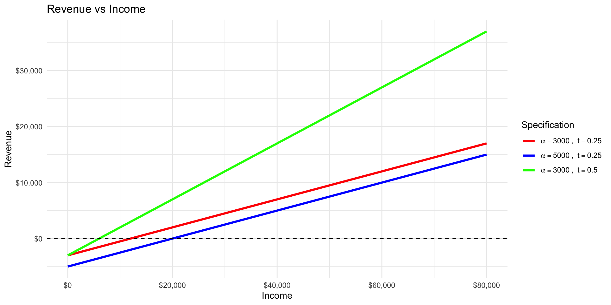
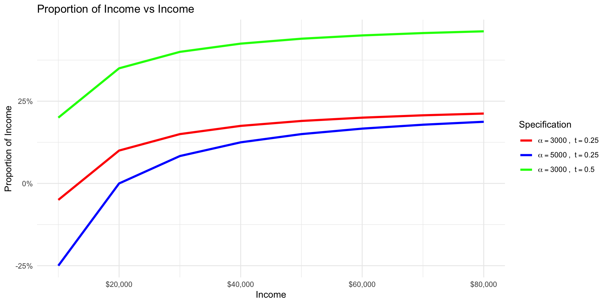

Efficient and Equitable Taxation
EC313 - Public Economics: Taxation
Justin Smith
Wilfrid Laurier University
Fall 2026

Goals of This Section
Goals of This Section
In this section we will:
- Lay out model for optimal taxation
- Derive the Ramsey Rule for optimal commodity taxation
- Discuss optimal user fees
- Discuss optimal income taxation
- Discuss political economy and time inconsistency
- Discuss other criteria for tax design
Optimal Taxation
Introduction
- As we have discussed, governments raise taxes mainly to raise revenue
- But taxes involve costs
- The direct cost of the revenue raised
- Additional costs from distortions in behaviour (excess burden)
- Given that revenue needs to be raised, how should taxes be designed to minimize costs?
- Optimal taxation addresses this question
Model
- Question of optimal taxation is answered with a model
- A representative citizen consumes two goods, \(X\) and \(Y\)
- Prices of these goods are \(P_{X}\) and \(P_{Y}\)
- Person can also work and earn wage \(w\)
- Person has \(T\) hours available for work (\(h\)) or leisure (\(L\))
- These are the only two uses of time, so \(T = h + L\)
- Their budget constraint in this context is
\[ w(T - L) = P_{X}X + P_{Y}Y\]
- Constraint says that income is split between spending on goods \(X\) and \(Y\)
Model
- If you rearrange the budget constraint, you can write it as
\[wT = P_{X}X + P_{Y}Y + wL\]
- Shows that full income is split between spending on goods \(X\) and \(Y\) and spending on leisure
- Full income is \(wT\) because if all time was worked, income would be \(wT\)
- Price of leisure is \(w\) because each hour of leisure foregoes \(w\) in earnings
- Suppose we tax goods \(X\), \(Y\), and \(L\) at rate \(t\)
- Then the budget constraint becomes
\[ wT = (1 + t)P_{X}X + (1 + t)P_{Y}Y + (1 + t)wL\]
Model
- Rearranging gives
\[wT = (1+t)(P_{X}X + P_{Y}Y + wL)\]
\[ \frac{wT}{1 + t} = P_{X}X + P_{Y}Y + wL\]
Key Insight
A tax on all goods and leisure is equivalent to a reduction in full income by a factor of \(\frac{1}{1 + t}\)
- We saw this in one of the practice questions
Model
Why Taxing Everything Equally Is Non-Distortionary
If we could tax all goods and leisure at the same rate, we would not distort behaviour because relative prices are unchanged. The commodity taxes are equivalent to a lump-sum tax that reduces income.
- But in practice, we cannot tax all goods and leisure at the same rate
- We cannot tax leisure directly
- Can only tax \(X\) and \(Y\) in this setup
- Taxing some goods (\(X\) and \(Y\)) but not others (\(L\)) distorts relative prices and leads to excess burden
Ramsey Rule
- Question then becomes: If we cannot tax all goods at the same rate, how should we tax them?
- One option is neutral taxation: taxing \(X\) and \(Y\) at the same rate
- This is simple and easy to administer
- But it still distorts behaviour and creates excess burden
The Ramsey Rule
Tax goods so that the percent reduction in quantity demanded is the same for all goods. Equivalently, tax goods so that the marginal excess burden of the last dollar of revenue raised is the same for all goods.
- The next few slides establish this result
Ramsey Rule
- Consider again two goods, \(X\) and \(Y\), with prices \(P_{X}\) and \(P_{Y}\)
- Pretend that goods are neither substitutes nor complements
- Simplifies the analysis because changes in their prices do not affect each other’s demand
- Results still hold for substitutes and complements, but analysis is more complex
- Also pretend the supply curve is horizontal
- Consumers face the entire economic incidence of the tax
- Again simplifies the analysis because we do not have to consider supply side effects
- Consider a unit tax \(u_{X}\) on good \(X\)
Ramsey Rule

- Consumer initially consumes \(X_{0}\) at price \(P_{0}\)
- After tax \(u_{X}\) is imposed, price rises to \(P_{0} + u_{X}\)
- Consumer reduces consumption to \(X_{1}\)
- As we have learned this involves an excess burden
- Equals area of yellow triangle
- Represents the loss in consumer surplus beyond the tax revenue collected
Ramsey Rule

- Now imagine raising the tax further from \(u_{X}\) to \(u_{X} + 1\)
- The additional excess burden created is the marginal excess burden
- Equals area of purple trapezoid (triangle plus rectangle)
- Part of that excess burden was tax revenue (purple rectangle)
- Other part is additional loss in consumer surplus (purple triangle)
Ramsey Rule
- The marginal excess burden of the tax on good \(X\) is the purple area
- Equals area of the purple triangle plus the purple rectangle
- To compute that mathematically, set \(\Delta x = X_{1} - X_{2}\)
- The total area is then
\[ (\frac{1}{2} \Delta x \times 1) + (\Delta x u_{X}) \]
- As noted in the textbook, if we pretend that \(\frac{1}{2} \Delta x\) is very small, we can ignore it
- So marginal excess burden is approximately \(\Delta x u_{X}\)
Ramsey Rule
- Going one step further, note that the slope of the demand curve is \[ \frac{u_{X}}{\Delta X} = \frac{1}{\Delta x} \]
- \(\Delta X = X_{0} - X_{1}\), the initial change in quantity demanded from the initial tax
- Both represent the rise over the run
- Rearranging gives
\[ \Delta x u_{X} = \Delta X\]
- The marginal excess burden of the tax on good \(X\) is approximately \(\Delta X\)
- The change in quantity demanded from the initial tax
Ramsey Rule
- What about the change in revenue?
- Initially revenue was larger green rectangle plus purple rectangle
- After, it is larger green rectangle plus smaller green rectangle
- The marginal tax revenue is therefore the smaller green rectangle minus the purple rectangle
\[ (X_{2} \times 1) - (\Delta x u_{X}) \]
- We previously saw that \(\Delta x u_{X} = \Delta X\)
- We also know that \(X_{2} = X_{1} - \Delta x\)
- Subbing in gives us
\[ X_{1} - \Delta x - \Delta X \]
Ramsey Rule
- If we pretend that \(\Delta x\) is very small, we can ignore it
- So marginal tax revenue is approximately \(X_{1} - \Delta X\)
- The marginal excess burden per dollar of additional revenue is
\[ \frac{\Delta X}{X_{1} - \Delta X} \]
- If we repeat this exact exercise for good \(Y\), we find that the marginal excess burden per dollar of additional revenue is
\[ \frac{\Delta Y}{Y_{1} - \Delta Y} \]
Ramsey Rule
- If we set them equal
\[ \frac{\Delta X}{X_{1} - \Delta X} = \frac{\Delta Y}{Y_{1} - \Delta Y} \]
- Which simplifies to the Ramsey Rule
\[ \frac{\Delta X}{X_{1}} = \frac{\Delta Y}{Y_{1}} \]
- If you multiply both sides by \(100\) to express this as a percentage, it says percent change in quantity demanded of \(X\) equals percent change in quantity demanded of \(Y\)
Ramsey Rule with Elasticities
- Economists enjoy expressing things in terms of elasticities
- The compensated price elasticity of demand is
\[ \eta_{X} = \frac{\Delta X}{\Delta P_{X}} \times \frac{P_{X}}{X} \]
- Rearrange that to get
\[ \frac{\Delta X}{X} = \eta_{X} \times \frac{\Delta P_{X}}{P_{X}} \]
Ramsey Rule with Elasticities
- In this case, consider instead an ad valorem tax that makes the price rise to \(P_{X}(1 + t_{X})\)
- The numerator of this fraction is then \(\Delta P_{X} = P_{X}(1+t_{X}) - P_{X} = P_{X}t_{X}\)
- Substituting into the equation on the previous slide gives
\[\frac{\Delta X}{X} = \eta_{X} \times t_{X} \]
Ramsey Rule with Elasticities
- The Ramsey Rule then becomes
\[ \eta_{X} t_{X} = \eta_{Y} t_{Y} \]
- Equivalently
\[ \frac{t_{X}}{t_{Y}} = \frac{\eta_{Y}}{\eta_{X}} \]
Ramsey Rule with Elasticities
The Inverse Elasticity Rule
When goods are unrelated in consumption, the optimal tax rate on a good is inversely proportional to its compensated price elasticity of demand. If good \(Y\) has a high elasticity relative to good \(X\), then \(t_{X}\) should be higher than \(t_{Y}\).
- Why?
- Because a tax on a good with a high elasticity will cause a large reduction in quantity demanded
- This creates a large excess burden
- So to minimize excess burden, tax goods with high elasticities less
iClicker Question
The compensated price elasticity of demand is \(-0.25\) for gasoline and \(-1.0\) for restaurant meals. As in our model, supply of both is horizontal and the two goods are unrelated in consumption. To raise a given amount of revenue with the least excess burden, the tax rate on gasoline should be:
A) One-quarter of the rate on restaurant meals
B) The same as the rate on restaurant meals
C) High enough to raise all the revenue, with no tax on restaurant meals
D) Four times the rate on restaurant meals
E) Whatever rate makes the two taxes raise the same revenue
Corlett-Hague Rule
- Recall that we could not tax leisure directly
- And therefore could not apply an efficient (lump-sum equivalent) tax
- This created the excess burden
The Corlett-Hague Rule
With two goods, tax the good that is complementary to leisure (used together with it) at the relatively higher rate. Examples: yachts, ski equipment, recreational vehicles.
- This indirectly lowers demand for leisure and acts like a tax on leisure
- Gets us a bit closer to the most efficient outcome
iClicker Question
Ski-lift tickets and work boots have the same price elasticity of demand. Leisure cannot be taxed. Which tax structure raises a given revenue with less excess burden, and why?
A) The same rate on both, because their elasticities are equal
B) A higher rate on lift tickets, because skiing is a complement to leisure
C) A higher rate on work boots, because they are a substitute for leisure
D) A higher rate on lift tickets, because skiing is a luxury and this makes the tax more progressive
E) No tax on lift tickets, because pushing people from leisure toward work adds to the distortion
Equity in Taxation
- Ramsey rule implies taxing goods that are inelastic more heavily
- Makes sense when those goods are socially undesirable (e.g., cigarettes, alcohol)
- But what if those goods are necessities (e.g., food, clothing, housing, medicine)?
- Problematic for a few reasons, but one is that it lacks vertical equity
- Vertical equity: people with greater ability to pay should pay more in taxes
- You can modify the Ramsey rule to account for vertical equity (Diamond, 1975)
- A modified rule may tax necessities less heavily
- Essentially allows for larger excess burden to achieve greater equity
- How far to depart depends on how strongly society values equality, and how differently rich and poor consume
Summary
- In the real world we cannot achieve the efficient outcome of a lump-sum tax to raise government revenue
- Distortionary taxes change behaviour and create an excess burden
- We can design the tax system to minimize the excess burden
- The Ramsey Rule gives that optimal design
- But tax efficiency is not the sole consideration
- Equity is also important
- The optimal rule can change to account for equity considerations
Optimal User Fees
Introduction
- Governments often charge user fees for public services
- User fee: a fee charged by the government for the use of a good or service
- Examples: park entrance fees, toll roads, public transit fares, etc.
- Like a tax, but not a tax
- Determining the optimal user fee is similar to determining the optimal tax
Government Production

- Governments sometimes produce goods/services when there is a natural monopoly
- Natural Monopoly: a market where a single firm can produce the entire output at lower cost than multiple firms
- Happens with continuously decreasing average costs
- Examples: water, electricity, public transit, etc.
- Natural monopoly depicted to the left
- Marginal cost fixed for ease of analysis
- Could also draw it downward sloping as in the text
Government Production

- An unregulated monopolist would produce \(Q_{0}\) where MR = MC
- Would charge price \(P_{0}\)
- The monopoly earns excess profits equal to yellow area
- Also associated with deadweight loss (excess burden) equal to red area
- The monopolist does not produce the efficient (P=MC) level of Z
Government Production

- The government could take over and produce the good/service
- Or regulate the private monopolist
- There are different options for production
- One is to produce the efficient level \(Q_{1}\) where \(P = MC\)
- But price \(P_{1}\) is below average cost \(AC\)
- The government would incur a loss equal to green area
Government Production

- Another option is average cost pricing
- Produce \(Q_{3}\) where \(P = AC\)
- Government incurs no excess profits or losses
- Price \(P_{3}\) is above \(MC\), so there is still some deadweight loss (excess burden) equal to red area
Government Production
- A third option is to set P=MC and charge a lump sum tax to cover the loss
- Hard to do in practice because generally cannot levy lump sum taxes
- Non-users would pay for it, violating the benefits-received principle: those who use a public service should pay for it
- A fourth option is a two-part tariff
- Set P=MC and charge a fixed fee to cover the loss
- Only users of the good pay the fee
- Divide the loss by the number of users to get the fee per user
- Drawbacks
- Light users may quit rather than pay the fee, so use falls below the efficient level
- Everyone pays the same fee, so it is regressive
Government Production
- Lastly, use the Ramsey Rule
- If government produces multiple goods/services, set user fees for each
- Optimally set them so that the percent reduction in quantity demanded is the same for all goods/services
- We saw that this involves setting higher fees for goods/services with inelastic demand
- The user fee effectively acts like a tax on the good/service
- In practice, Canada uses average cost pricing in many cases for public and regulated enterprises
- Inefficient, but simple and consistent with the benefits-received principle
Comparing the Pricing Options
| Option | Efficient quantity? | Who covers the loss | Main problem |
|---|---|---|---|
| P = MC + lump-sum tax | Yes | Everyone | Lump-sum taxes aren’t available; non-users pay |
| Two-part tariff | Yes | Users only, via a fixed fee | Only works if the fee doesn’t drive users away |
| Ramsey rule | No | Users, with higher fees on inelastic services | Some deadweight loss, kept as small as possible |
| Average cost pricing | No | Users, through the price | Deadweight loss |
| Unregulated monopoly | No | No loss; the firm earns profits | Largest deadweight loss |
- The two-part tariff is best in theory; average cost pricing is common in practice
iClicker Question
A provincial ferry is a natural monopoly: average cost falls as trips increase, so marginal cost is below average cost. Assume no regular rider would stop riding because of a fixed annual fee. Which pricing scheme gives the efficient number of trips with no excess burden anywhere, including in whatever pays for the ferry’s costs?
A) Charge marginal cost per trip
B) Charge average cost per trip
C) Charge the price where marginal revenue equals marginal cost
D) Charge marginal cost per trip and cover the deficit from provincial income tax
E) Charge marginal cost per trip, plus a fixed annual fee for each rider
Optimal Income Tax
Introduction
- So far we have discussed optimal commodity taxes and user fees
- Income taxes are another major source of government revenue
- Income taxes are different because they tax a person’s ability to pay
- One common view is that income measures ability to pay (we return to this under horizontal equity)
- Income taxes therefore affect both labour supply and consumption
- You can design an income tax optimally
Old School Optimal Tax
- A very old approach to optimal income taxation is Edgeworth’s Model
Edgeworth’s Model Assumptions
- Maximize social welfare: the combination of individual utilities
- Social welfare is utilitarian: the sum of individual utilities
- Everyone has an identical utility function that depends only on income
- Has diminishing marginal utility of income
- Total amount of income in society is fixed
- This model predicts that after-tax income is the same for everyone
- Involves taxing rich and giving to poor until equality is reached
- Incomes are levelled from the top down: a 100% marginal tax rate on the highest incomes
- This is not a realistic model, but it is a starting point
iClicker Question
Ann earns $90,000 and Bo earns $30,000. They have identical utility functions with diminishing marginal utility of income, and the government needs $20,000 in revenue. The government can pay transfers as well as collect taxes. Under Edgeworth’s model, the tax system that maximizes social welfare has:
A) Ann paying $40,000 and Bo receiving $20,000
B) Each paying $10,000
C) Ann paying $15,000 and Bo paying $5,000
D) Ann paying all $20,000 and Bo paying nothing
E) Ann paying $30,000 and Bo receiving $30,000
Newer Approach to Optimal Tax
- Major problem with Edgeworth’s model is that it ignores behavioural responses
- People will supply less labour if taxed heavily
- Modern models take this into account
- Taxes raise revenue that pays for redistribution
- But also create excess burden by distorting labour supply
- Optimal tax balances these two effects
- The government chooses a tax schedule: the tax owed at each level of income
- The schedule could take any shape, which makes the problem hard to solve
- The simplest case is a straight line: a linear income tax
- Not as limiting as it sounds: the optimal non-linear tax is close to linear (Mankiw, Weinzierl and Yagan, 2009)
Newer Approach to Optimal Tax

- A linear income tax schedule is depicted to the left
- Revenue collected from a person with a given income is
\[ Revenue = -\alpha + t \times Income \]
- The term \(\alpha\) is a fixed payment to everyone
- If \(\alpha > 0\), it is a subsidy
- If \(\alpha < 0\), it is a lump-sum tax
- The term \(t\) is the marginal income tax
Newer Approach to Optimal Tax
- A constant marginal tax is a flat tax
- Comes from a linear tax schedule
- With the grant, it is still a progressive tax system
- Share of income paid in tax rises with income
- Canada and the US have marginal rates that rise with income
- Optimal tax result: top rate should be lower than the bottom rate (Gruber and Saez, 2002)
Newer Approach to Optimal Tax

- An example with different flat taxes is shown to the left
- Graph plots total revenue
- There are three curves
- \(\alpha = 3000\), \(t = 0.25\)
- \(\alpha = 5000\), \(t = 0.25\)
- \(\alpha = 3000\), \(t = 0.5\)
- \(\alpha\) changes the intercept
- \(t\) changes the slope
Newer Approach to Optimal Tax

- Now plot the proportion of income paid in tax
- Here you can see the progressivity of the tax
- With the same \(t\), the bigger grant, \(\alpha = 5000\), is the most progressive
- Raising \(t\) with the same grant shifts the curve up without making it steeper
- In the optimal tax problem, a higher \(t\) pays for a larger grant
- The tax becomes more progressive, at the cost of more excess burden
Choosing the Optimal Tax
- Government picks \(t\) and \(\alpha\) to maximize social welfare
- It must raise a set amount of revenue, so a bigger grant needs a higher \(t\)
- Picking \(t\) fixes \(\alpha\): the problem comes down to choosing one tax rate
- A higher \(t\) pays for a bigger grant: more redistribution
- But it also discourages work: more excess burden
- The optimal \(t\) balances the two
Newer Approach to Optimal Tax
- The specific optimal tax rates depend on the model assumptions
- Labour supply elasticity: more elastic labour supply means a lower optimal \(t\)
- Social welfare function
- Ability to pay
- Income distribution
- Mankiw, Weinzierl and Yagan (2009): optimal \(t\) is around 48–50%
- Optimal grant \(\alpha\) is just over 60% of average income per worker
- Using a more egalitarian social welfare function, optimal tax is higher
- Egalitarian social welfare function puts more weight on poorer individuals
- Stern (1976), maximin criterion: optimal rate around 80%
- Gruber and Saez (2002), four brackets: the top bracket gets a lower marginal rate than the lowest bracket
- But average rates still rise with income, so the tax is still progressive
Politics and Time Inconsistency
Introduction
- Optimal tax theory provides purely theoretical guidance on how to design taxes
- In practice, tax policy is determined by politics
- Politicians care about getting elected
- Voters care about their own taxes and benefits
- So the optimal tax is not a realistic outcome
- It is possible that in the real world, implementing the optimal tax is not even desirable (Holcombe, 2002)
Politics and Optimal Tax
- Imagine a government wants to tax society to raise revenue
- People consume three goods: \(X\), \(Y\), and leisure \(L\)
- Labour supply is fixed, so income is fixed and nobody can substitute into or out of leisure
- The government currently taxes only \(X\); its constitution forbids taxing \(Y\)
- Inefficient: it raises the price of \(X\) relative to \(Y\), so people switch from \(X\) to \(Y\)
- A tax economist suggests lowering the tax on \(X\) and taxing both \(X\) and \(Y\) at the same rate, raising the same revenue
- Efficient: the price of \(X\) relative to \(Y\) doesn’t change, so nobody switches
- With income fixed, a tax on all spending works like a lump-sum tax: no excess burden
- Different elasticities for \(X\) and \(Y\) don’t change this: with leisure fixed, the Ramsey rule itself gives equal rates
Politics and Optimal Tax
- Citizens are cynical
- They think the government will implement the tax on \(Y\) but not lower it on \(X\)
- View the government as trying to maximize revenue at their expense
- In certain situations they might be right
- If they are correct, the ban on taxing \(Y\) protects them from an inefficiently large public sector
- What looks inefficient to optimal tax theory may be efficient in a larger setting
Time Inconsistency Problem
- In 2012 the UK deputy prime minister proposed a one-time tax on the wealth of the rich (Frank, 2012)
- It taxes wealth already built up, so it works like a lump-sum tax: no excess burden
- But the government has an incentive to renege and do it again next year
- The wealthy expect this and save less, so the tax distorts behaviour after all
- Unless the promise is credible, the efficient policy can’t be carried out
Time Inconsistency Problem
A policy is time inconsistent when the government announces it but later has an incentive to abandon it. If people expect this, the announcement is not credible, and they act on what they expect the government to do rather than on what it says. An optimal tax plan can fail for this reason.
Other Criteria for Tax Design
Horizontal Equity
Horizontal Equity
People in “equal positions” should be treated equally. When it comes to taxation, equal positions might mean equal ability to pay, out of income, consumption, or wealth.
- Horizontal equity is desirable because it is viewed as fair
- People in equal positions should pay the same tax
- If not, people may view the tax system as unfair and try to avoid taxes
- Defining horizontal equity in terms of income or wage is problematic
- Two people with the same wage who work different hours have different incomes but the same earning capacity
- So they are arguably in equal positions, and income is a poor measure of position
- Using the wage rate instead has problems: it reflects human capital investments, and hours are hard to observe and can be misreported
Utility Definition of Horizontal Equity
- Could instead define horizontal equity in terms of utility (Feldstein, 1976)
- Utility definition of horizontal equity: people with the same pre-tax utility should have the same after-tax utility, and taxes should not alter the utility ordering
- Problems with this approach
- Utility is unobservable
- With different tastes, “equally well off” means equal utility numbers, so utility must be comparable across people
- If tastes differ, an income tax generally violates it: it taxes goods bought with income, but not leisure
- Example: a gourmet and a sunbather each earn $20 an hour and start with the same utility
- The gourmet works 50 hours a week to buy food; the sunbather works 10 and spends the rest at the beach
- A 25% income tax cuts the gourmet’s food spending by $250 a week; the sunbather pays $50 and keeps every hour at the beach
- The gourmet ends up worse off; the traditional definition sees no problem, since their incomes differ
Horizontal Equity and Untaxed Perks
- Some jobs pay partly in untaxed perks (e.g. nice work environment, flexible hours)
- Assume identical tastes and free choice of job; with no tax, Jobs A and B are equally attractive
| Job A | Job B, before workers move | Job B, after workers move | |
|---|---|---|---|
| Cash wage | $50,000 | $45,000 | $43,750 |
| Untaxed perk | — | $5,000 | $5,000 |
| Income, cash plus perk | $50,000 | $50,000 | $48,750 |
| 20% income tax | $10,000 | $9,000 | $8,750 |
| After-tax cash plus perk | $40,000 | $41,000 | $40,000 |
- Traditional (same income, same tax): the perk escapes tax, so B pays $1,000 less than a worker with the same income paid all in cash: a horizontal inequity
- After workers move, that worker earns $48,750 in cash and pays $9,750; B pays $8,750
- Utility (equally well off before the tax, equally well off after): A and B started equal and end equal: no inequity
- B’s wage falls $1,250, or $1,000 after tax: a hidden tax that offsets the tax saved on the perk
Horizontal Equity and Existing Taxes
- With identical tastes and free choice, an existing tax system creates no horizontal inequity
- People choose knowing the taxes, and wages and prices adjust, e.g. lower pay in jobs with untaxed perks
- Inequities come from changes in tax law
- People make hard-to-reverse commitments under the old law, e.g. a bigger house because housing is tax-favoured
- MacEachen’s 1981 budget: base broadening was attacked for turning incentives people relied on into “loopholes”
- Hence the saying: “the only good tax is an old tax”
- Transitional equity: how to change tax regimes fairly, e.g. by phasing reforms in
- The utility definition depends on the utility ordering before any new tax (i.e. biased towards status quo)
Rule Definition of Horizontal Equity
- The utility definition judges the outcomes of taxation; another approach judges the rules
- Rule definition of horizontal equity: taxes should not be capricious or based on irrelevant characteristics
- Rules out, e.g., a special tax on red-haired people, even if it were efficient or redistributive
- Comparing the three definitions
- Traditional: equal income, spending or wealth; but these reflect people’s choices
- Utility: equal well-being; but unobservable and biased towards the status quo
- Rule: fair rules; but which characteristics are relevant is disputed
- Basic idea is that while horizontal equity is desirable, it is hard to define and implement in practice
iClicker Question
Chris and Dana have the same income and are equally well off. Chris spends spare money on craft beer; Dana spends spare money on concerts. The province puts a new tax on beer only. Under the utility definition of horizontal equity, the beer tax is:
A) Equitable, because the tax does not depend on income
B) Equitable, because Chris could switch to concerts and avoid the tax
C) Equitable, because both face the same tax rate on beer
D) Impossible to judge, because utility cannot be observed
E) Not equitable, because Chris ends up worse off than Dana
Administrative Costs
- Taxes are costly to administer
- Direct costs of about $1 to collect $100 of personal income and payroll tax (Vaillancourt, 1989)
- Ignoring administration can backfire: cigarette smuggling in 1993–94
- Combined federal and provincial taxes reached $2.75–$3 a pack, and smuggling from the US became rampant
- Taxes were cut by up to 60% in Quebec and Ontario, and Ottawa stepped up border enforcement
- Tax design must balance excess burden against administrative costs
- E.g. a different rate on every good, as the Ramsey rule suggests, is cumbersome to run
Compliance Costs
- Taxpayers also bear compliance costs: their time plus spending on tax help
- Personal income tax, 2012: at least $190 per taxpayer, $235 including appeals and planning
- GST: 17% of tax collected for firms with sales up to $100,000, 2.65% above $1 million
- Administration plus compliance, all taxes: 1.5–1.8% of GDP (Vaillancourt, Roy-César and Barros, 2013)
- Some changes have led to smaller costs
- Online filing, automatic download of tax forms, SimpleFile for low-income filers
- Proposed: the CRA files for lower-income people who owe no tax, from the 2026 tax year
Compliance
- Canada and other countries operate on a self-assessment system
- Taxpayers are responsible for reporting their income and calculating their taxes
- Government audits a small percentage of taxpayers to ensure compliance
- Some people try to pay less tax
- Tax avoidance: legally changing your behaviour to reduce your tax liability
- Tax evasion: illegally not paying taxes you legally owe
- It is not always easy to catch tax evasion
- Government has to balance the costs of enforcement against the benefits
- If enforcement is too costly, it may not be worth it
- There is an economic theory that determines “optimal” tax evasion
iClicker Question
Which of these is tax evasion rather than tax avoidance?
A) Splitting pension income with a lower-income spouse
B) Moving from Ontario to Alberta for its lower provincial income tax
C) Deducting a home office for a room that is really a guest room
D) Holding savings in a TFSA so the investment income is not taxed
E) Selling a stock in January instead of December to report the gain in a lower-income year
Tax Evasion in Canada
- Common ways to commit tax fraud
- Two sets of books: one real, one shown to the tax authorities
- Moonlighting for cash: no record, so the income goes unreported
- Bartering: payment in kind is taxable, but seldom reported
- Dealing in cash: hard for the CRA to trace
- Underreporting is most common among the self-employed: 12–21% of self-employment income goes unreported (Schuetze, 2002)
- Size of the underground economy in Canada
- Evasion on legal activity: at most 5.2% of GDP; 8–16% of GDP including illegal activity (Pigeon, 2004)
Compliance

- Imagine that costs of evasion rise with the amount evaded
- Penalty rises with amount evaded
- There is some probability that you get caught
- Could be psychic costs to cheating
- Risk aversion might play a role
- Benefit is constant
- Gain is \(t\) per $1 evaded
- As with many economic decisions, optimal evasion occurs where marginal benefit equals marginal cost
- This person would evade \(R^{*}\)
Compliance

- If costs are too high, no evasion occurs
- Probability of getting caught might be high
- Penalty might be high
- Large psychic costs or very risk averse
- A higher audit probability or a higher penalty shifts marginal cost up, so evasion falls
- Evidence: we don’t know whether bigger fines or more audits deter more
- Audits raise later compliance for most groups, but the effect is small (Blumenthal, Christian and Slemrod, 2001)
iClicker Question
In the evasion model, the benefit of each dollar of income hidden is the tax rate \(t\), and the marginal cost of evading rises with the amount hidden. The tax rate is cut from 30% to 25%, and nothing else changes. What happens to evasion, and why?
A) It falls, because a lower tax rate raises the marginal cost of evading
B) It rises, because a lower tax rate lowers the marginal cost of evading
C) No change, because the chance of getting caught and the penalty are the same
D) It falls, because each dollar hidden now saves less tax
E) It falls, because people have more after-tax income and need to evade less
Compliance
- Also the normative question about tax evasion: do we care about the welfare of evaders?
- Some economies have large underground or informal economies
- Developing countries often have significant employment in informal economies
- Hiding legal work from the tax authorities is still tax evasion, so many informal workers are evaders
- If their welfare counts, it might be desirable to have the underground/informal economy even if they pay no tax
- They are often poor and would not pay much tax; some would be jobless under regular taxes and rules
- They often provide goods/services that are beneficial to society
- Trying to eliminate the informal economy might do more harm than good
iClicker Question
A province offers a tax amnesty: anyone who reports unpaid tax from past years pays what they owe with no penalty. The government promises it will never offer another one. How could the time inconsistency problem make evasion rise afterward?
A) It can’t, because the amnesty only covers taxes from past years
B) It can’t, because the government has promised in public and taxpayers will take it at its word
C) Another amnesty will tempt the government later, so people expect one and evade now
D) The amnesty lowers the penalty for evading this year
E) Honest taxpayers see evaders let off and become less willing to comply
Summary
Summary
- Taxes create excess burden by distorting behaviour
- The Ramsey Rule gives the optimal way to tax goods to minimize excess burden
- User fees can be optimized in a similar manner
- Optimal income tax is progressive, but the specific rates depend on model assumptions
- Politics and time inconsistency can prevent optimal tax from being implemented
- Other criteria for tax design include horizontal equity, administrative costs, and compliance
References
References
Rosen, Harvey S., Lindsay M. Tedds, Trevor Tombe, Jean-François Wen, and Tracy Snoddon. Public Finance in Canada. 6th Canadian edition. McGraw-Hill Ryerson, 2023.
Gruber, Jonathan. Public Finance and Public Policy. 7th edition. Worth Publishers, 2022.
Studies cited by author and year on the slides are as reported in Rosen et al. (2023), Chapter 16.